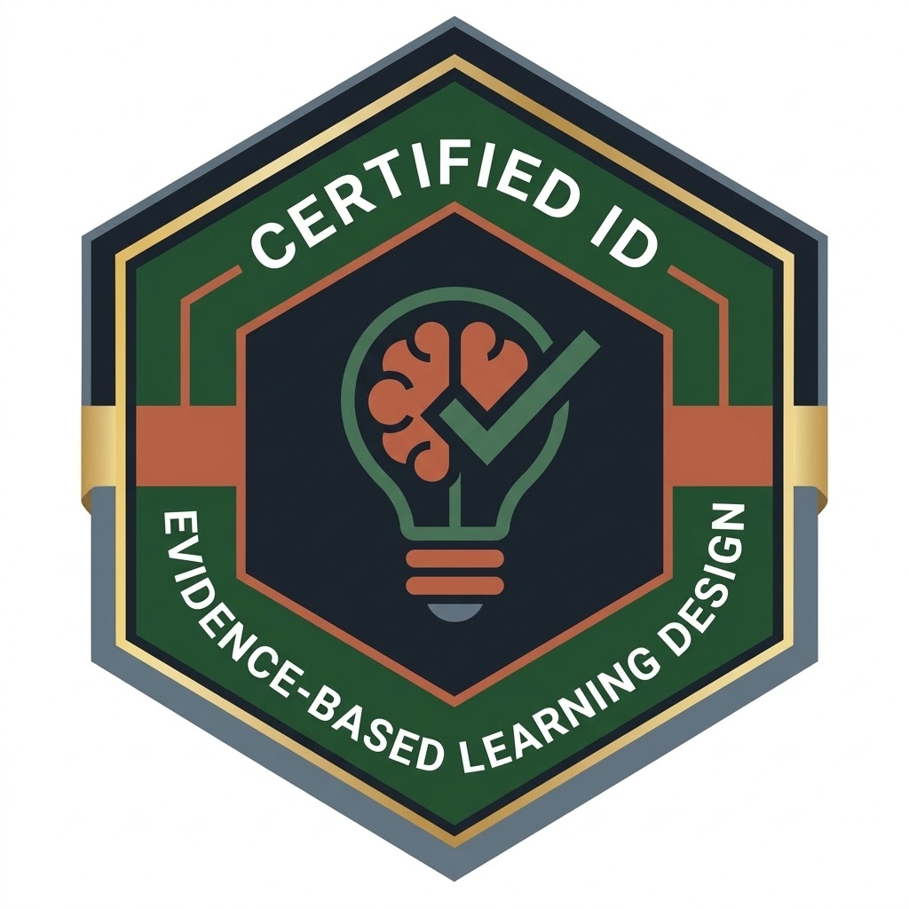

Micro-Attestato di Competenze Formative
Certificato di Completamento Didattico
Evidence-Based Instructional Design & Principi Multimediali
Si certifica con merito che il discente ha completato l'intero percorso didattico asincrono a progressione vincolata su piattaforma LMS, superando le prove di verifica formativa e active retrieval practice sul corso:
Scienza dell'Apprendimento Digitale & Principi di Clark & Mayer
Comprendere
Architettura della Memoria: Padronanza dei limiti della memoria di lavoro rispetto alla memoria a lungo termine e prevenzione dell'essential overload.
Applicare
Principio di Segmentazione: Progettazione di micro-unità autonome (chunking) a ritmo controllato dal discente per il mobile learning.
Valutare
Principio di Coerenza: Eliminazione rigorosa del rumore cognitivo, dettagli seduttivi, grafica ornamentale e sovraccarico estraneo.